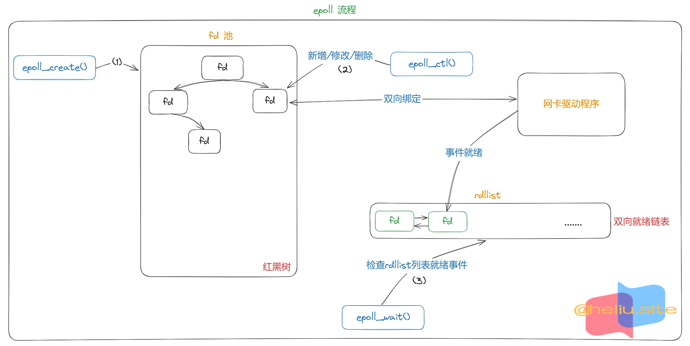

Linux epoll
💥本文章所有相关go代码参考自go 1.18+版本
epoll描述
- 适用范围：连接数量多，但活动连接较少的情况。
epoll高效的奥秘：epoll精巧的使用3个方法实现select方法要做的事：epoll_create()：创建一个epoll文件描述符。- 执行一次
epoll_create()函数就会创建一个epoll池，因此初始化执行一次即可。 epoll_create函数会返回一个epoll文件描述符。
- 执行一次
epoll_ctrl()：添加/修改/删除需要侦听的文件描述符及其事件。- 一个
socket只需调用该函数一次注册当前文件描述符。 - 该函数注册时可以添加具体的侦听的事件和用户数据，当前事件触发时可以根据
epoll_wait函数获取事件。 - 返回注册成功和失败结果。
- 一个
epoll_wait()：接收发生在被侦听的描述符上的，用户感兴趣的IO事件，返回已就绪的事件集。
- 查询系统最大支持FD数目：
cat /proc/sys/fs/file-max。 - 理解epoll的关键要素：红黑树、链表。
- 红黑树：存储epoll所监听的套接字。epoll在实现上采用红黑树去存储所有套接字，当添加或者删除一个套接字时（epoll_ctl），都在红黑树上去处理，红黑树本身插入和删除性能比较好，时间复杂度O(logN)。
- 通过epoll_ctl函数添加进来的事件都会被放在红黑树的某个节点内，所以重复添加是没有用的。当把事件添加进来的时候时候会完成关键的一步，那就是该事件都会与相应的设备（网卡）驱动程序建立回调关系，当相应的事件发生后，就会调用这个回调函数，该回调函数在内核中被称为：ep_poll_callback，这个回调函数其实就所把这个事件添加到rdllist这个双向链表中。一旦有事件发生，epoll就会将该事件添加到双向链表中。那么当我们调用epoll_wait时，epoll_wait只需要检查rdlist双向链表中是否有存在注册的事件，效率非常可观。这里也需要将发生了的事件复制到用户态内存中即可。中断程序还有一个重要作用是将阻塞的进程唤醒起来执行。
- 总结：
- 红黑树的作用：当有事件发生时，可以快速根据fd查找epitem（找到得epiterm会组成链表传递给用户空间做进一步处理），比遍历链表快多了！
- 内核中链表适用的场景：用来做队列或栈，存储的每个节点都要处理（说白了就是需要遍历），不存在查找的需求场景！
- epoll事件底层最终是中断触发的：当网卡收到数据后，通过中断通知操作系统来取数据，进而触发epoll事件！

epoll_create()
- 在
epoll早期的实现中，对于监控文件描述符的组织并不是使用红黑树，而是hash表。所以在epoll_create的参数size没有什么意义。 epoll_create：该函数初始化时只执行一次。
|
|
epoll_ctl()
|
|
epoll_wait()
|
|
select、poll、epoll
| 系统调用 | select | poll | epoll |
|---|---|---|---|
| 事件集合 | 通过传入3个参数可读、可写、异常事件内核通过对这些参数在线修改来反馈其中的就绪事件，这使得用户每次调用select都要重置这3个参数 | 统一处理所有事件类型，因此只需要一个事件集参数。用户通过pollfd.events传入感兴趣的事件，内核通过修改pollfd.revents反馈其中就绪的事件 | 内核通过一个事件表直接管理用户感兴趣的所有事件。因此每次调用epoll_wait时，无需反复传入用户感兴趣的事件。epoll_wait系统调用的参数events仅用来反馈就绪的事件 |
| 应用程序索引就绪文件描述符的时间复杂度 | O(n) | O(n) | O(1) |
| 最大支持文件描述符数 | 一般有最大值限制 | 65535 | 65535 |
| 工作模式 | LT | LT | 支持ET高效模式 |
| 内核实现和工作效率 | 采用轮询方式检测就绪事件，时间复杂度：O(n) | 采用轮询方式检测就绪事件，时间复杂度：O(n) | 采用回调方式检测就绪事件，时间复杂度：O(1) |
socket()
- 创建一个socket，为一个socket数据结构分配存储空间。
- 两个网络程序之间的一个网络连接包括五种信息：【通信协议】、【本地协议地址】、【本地主机端口】、【远端主机地址】和【远端协议端口】。
- 该函数不会阻塞。
|
|
bind()
- Bind函数将socket与本机上的一个端口相关联，随后你就可以在该端口监听服务请求
- 给socket绑定一个地址，这样client对这个地址的相应收发数据就能和socket相关联
- 服务端: 必须要调用bind进行绑定，bind 是绑定本地地址，它不负责对端地址，一般用于服务器端，客户端是系统指定的。
- 客户端: 非必须调用，如不调用，则系统自动分配一个端口和本地地址来进行和socket绑定
- socket函数并没有为套接字绑定本地地址和端口号，对于服务器端则必须显性绑定地址和端口号，bind函数主要是服务器端使用，把一个本地协议地址赋予套接字
- 该函数不会阻塞。
|
|
listen()
- 仅供服务器端调用，把一个未连接的套接字转换为一个被动套接字，指示内核应该接受指向该套接字的连接请求。
- 其内部实现归根结底就是设置sock结构的状态，设置其为TCP_LISTEN。
- 该函数不会阻塞。
- listen函数把一个未连接的套接字转换为一个被动套接字，指示内核应接受指向该套接字的连接请求，其内部实现归根到底就是设置sock结构的状态，设置其为TCP_LISTEN。
- 这个函数也是服务器端调用，其套接字的地址信息状态和bind函数执行之后是一样的，只绑定了本地地址信息，不知道对端的地址信息。
|
|
accept()
- 该函数返回一个已建立链接的可用 数据通信 的套接字
- 当socket模式设置为阻塞，accept函数的功能是阻塞等待client发起三次握手，当3次握手完成的时候，accept解除阻塞，并从全连接队列中取出一个socket，就可以对这个socket连接进行读写操作
- 该函数会阻塞等待链接。
|
|
accept4()
accept4()有第四个参数flags，这个参数如果为0，就跟accept()一样。- 额外添加的flags参数可以为新连接描述符设置 O_NONBLOCK | O_CLOEXEC (执行exec后关闭)这两个标记。
SOCK_NONBLOCK: 为新打开的文件描述符设置O_NONBLOCK标志位，这跟用fcntl()设置的效果是一样的，区别就是用fcntl()的话需要多调用个函数。SOCK_CLOEXEC: 为新打开的文件描述符设置FD_CLOEXEC标志位，该标志位的作用是在进程使用fork()加上execve()的时候自动关闭打开的文件描述符。
|
|
connect()
- TCP客户用connect函数来建立与TCP服务器的连接，其实是客户利用connect函数向服务器发出连接请求用户客户端。
|
|
read()
- 从打开文件中读取数据。
|
|